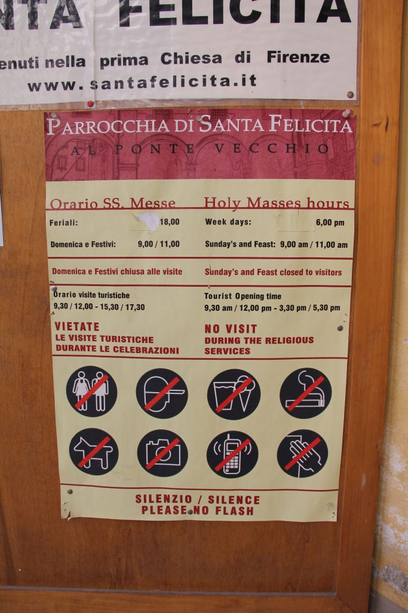

Photo by Francesca Tosolini
So what if you’ve been out in the hot sun in your shorts all day, and you stumble upon a beautiful church you’d like to visit, but don’t have a change of clothes? Fear not: Usually, in the vicinity of these churches, you’ll find a store selling disposable (usa e getta) clothes. It sounds crazy, I know, but there really is such a thing. So don’t despair, but instead look around. This may be a hassle especially during the hottest months, but some Italian masterpieces may be worth a little sweat. {This is an excerpt from chapter 7 “Churches and museums” of the eBook “Italy from the Inside. A native Italian reveals the secrets of traveling in Italy”. To buy our eBook click here}